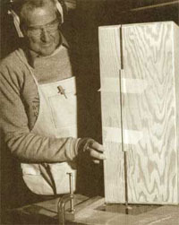
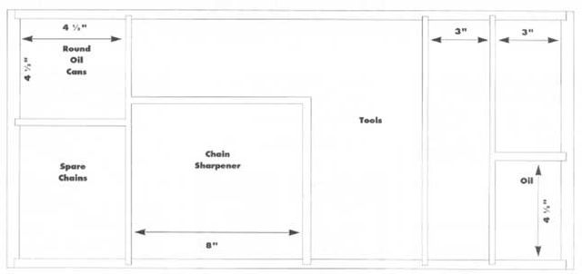

About this time of year seems we have to travel farther from home and our shop to find enough wood to supplement our winter supply. And it always seems that the farther you venture into the woods, the more gas and oil your chain saw requires. And you hope you won't have any serious breakdowns out in the field because you never have the necessary tools and parts. The solution? A simple design, an afternoon's project in your workshop, and away you go. This handy carrying case will hold everything you need. So grab this case, your can of gas, your chain saw, and go for it!
How to:
Lay out every piece of equipment that you'll want to carry with you along with your chain saw and determine any changes in my measurements that might be required (for example, you may have to increase the length if your spare bar is longer).
The top and bottom (A) and sides (B) of the box are cut from 3/8” AC plywood with the two end pieces (C) of ¾” plywood. The joints are simple rabbet joints, cut ½ of the wood thickness and assembled with glue and finishing nails. The dividers (D) are 3/8” x 4" plywood and are recessed in dadoes and slotted for egg crating at interlocking joints. Countersink the nails and fill the defect with wood putty.
An optional lip can be cut on the lie and box prior to assembly using a 3/8” straight router bit on a router table set up for ½ the thickness of the plywood.
A piano hinge is used along with two locking hasps and a handle, all readily available at your local hardware store or from a mail-order catalog.
Slightly round all edges with a small, round over-router bit or with sandpaper. The finish is optional but should also include the inside of the case. Four rubber feet are attached to the bottom.
This simply designed carrying case helps keep you prepared for any chainsaw emergency-no
matter where you are.
|
 |
|
 |